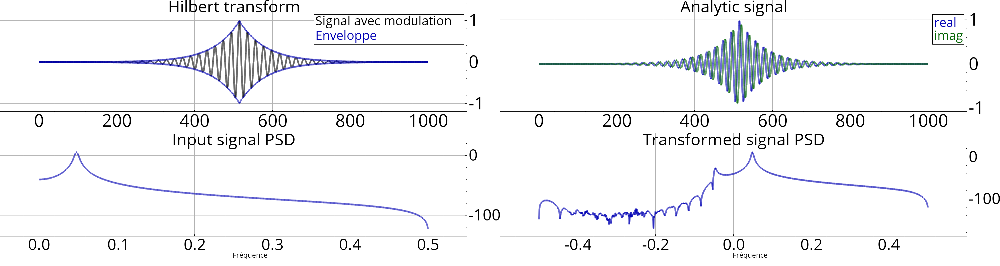
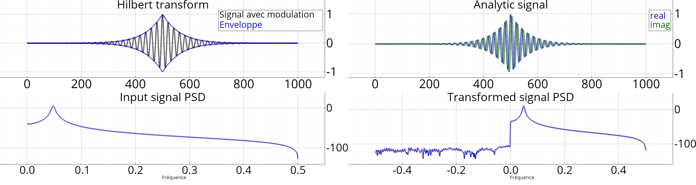

Enveloppe recovery
Here, we will recover the enveloppe of a signal using the Hilbert transform.
Figures exemple_hilbert_enveloppe( const ExHilbertEnveloppe &config)
{
soit n = 1000;
soit t = linspace(-24*π, 24*π, n),
x = cos(2*t) * exp(-abs(t)/10); // + t / (24*π); // signal de test Veccf z;
si(config.méthode == ExHilbertEnveloppe::RIF)
{
z = (hilbert_transformeur(config.ncoefs, Fenetre2string(config.tfen)))->step(x);
// Retarde le signal x afin de l'aligner avec l'enveloppe x = (ligne_a_retard<float>(config.ncoefs/2))->step(x);
}
sinon
{
soit X = fft(x * (fenêtre(config.tfen, n)));
X.tail(X.rows()/2-1).setZero();
z = ifft(X) * 2;
}
Figures res;
soit f = res.subplot();
f.plot(x, "k-" , "Signal avec modulation" );
f.plot(abs(z), "b-" , "Enveloppe" );
f.plot(-abs(z), "b-" );
f.titre(est_fr() ? "Transformée de Hilbert" : "Hilbert transform" );
f = res.subplot();
f.plot(real(z), "b-" , "real" );
f.plot(imag(z), "g-" , "imag" );
f.titre(est_fr() ? "Signal analytique" : "Analytic signal" );
f = res.subplot();
f.plot_psd(x);
f.titre(est_fr() ? "PSD signal entrée" : "Input signal PSD" );
f = res.subplot();
f.plot_psd(z);
f.titre(est_fr() ? "PSD signal transformé" : "Transformed signal PSD" );
retourne res;
}

Using FIR approximation (31 taps)

Using DFT